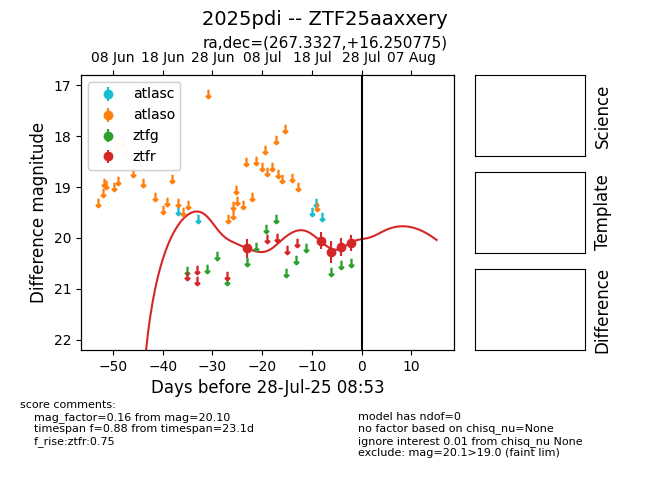

Target 2025pdi at 2025-07-28 08:53, see:
FINK: fink-portal.org/2025pdi
Lasair: lasair-ztf.lsst.ac.uk/objects/2025pdi
ALeRCE: alerce.online/object/2025pdi
TNS: wis-tns.org/object/2025pdi
YSE: ziggy.ucolick.org/yse/transient_detail/2025pdi
alt names
ZTF25aaxxery (ztf,fink)
2025pdi (tns,yse)
coordinates:
equatorial (ra, dec) = (267.3327,+16.25078)
galactic (l, b) = (41.0455,+20.87461)
photometry
last ztfr=20.10
5 ztfr detections
